UV Studio — Help & Documentation
UV Studio maps your artwork onto the screens in a venue or event model — LED walls, floors, pillars, ribbon boards — and sends the result straight back to Cinema 4D or Blender, or out as a GLB. This page walks through every tool with close-up screenshots.
Quick start
The entire workflow in four steps. Everything below goes deeper on each one.
- Click the orb, import a
.glb/.gltftogether with its PSDs/images — or Send a selection from Cinema 4D / Blender. - Confirm which objects are screens in the import dialog, then link each screen to its artwork in the wizard.
- Auto-map ALL to fit every screen to its content — adjust rotation/flip/projection per screen if needed.
- Send back to Cinema 4D / Blender, or Export a textured GLB.
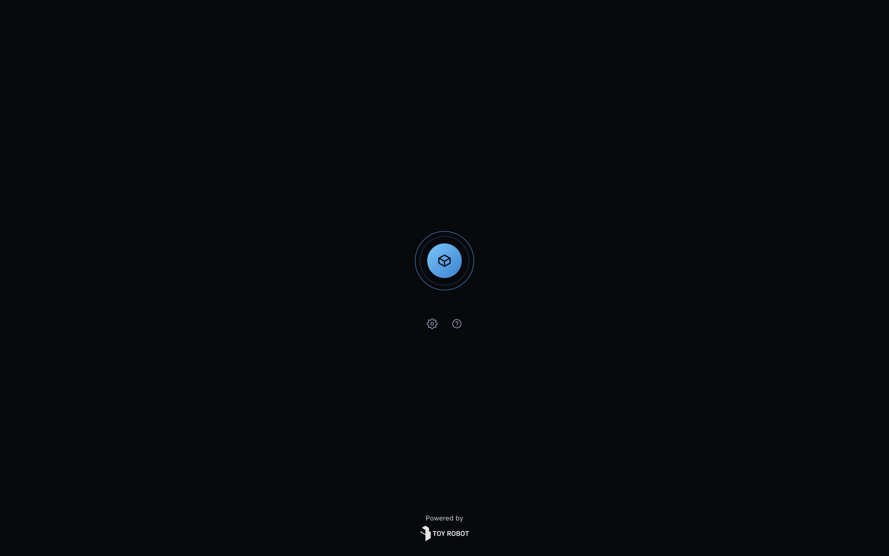
1Bringing screens in
Two ways to get geometry into UV Studio.
A. Import a model
Pick a GLB/glTF, optionally with its PSDs/images selected in the same dialog. UV Studio auto-detects likely screens by name — screen, led, display, ribbon, board, jumbotron, video wall, monitor — and pre-checks them (green screen tag; textured means it already carries a texture). Unchecked objects still import, as dimmable reference geometry. Different naming convention? Add your own words right in the dialog's Auto-detect screens named like field — detection re-runs live as you type, and a Filter box searches busy scenes. Editing keywords never undoes a box you ticked by hand.
B. Send from Cinema 4D / Blender
Select your objects in the DCC and hit Send — they open here automatically over the bridge (see below). No manual export.
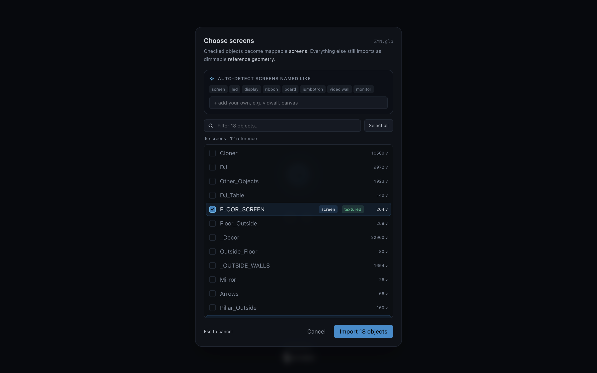
2Linking artwork to screens
The heart of the app: telling each screen which image or PSD layer plays on it.
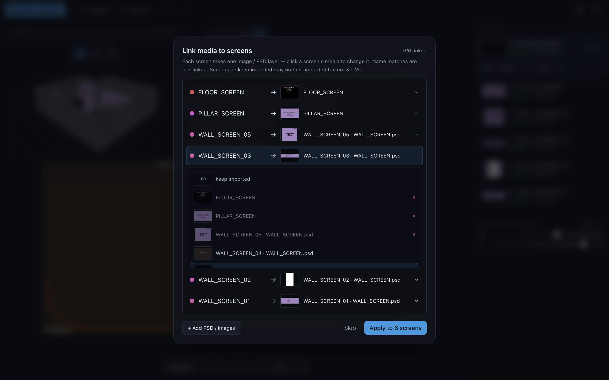
Name matches link automatically. Click any row to change it — pick by look, not filename. "keep imported" leaves the screen on whatever it came in with. Links are one-to-one: picking a layer already used elsewhere moves it.
The workspace
Once loaded: a 2D map, a floating 3D view, and the Screens panel.
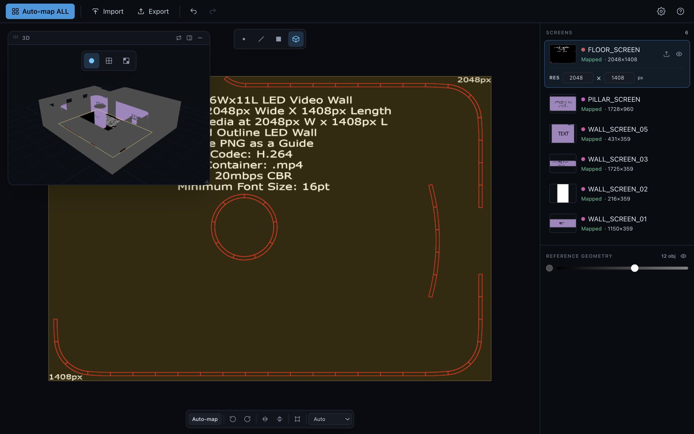
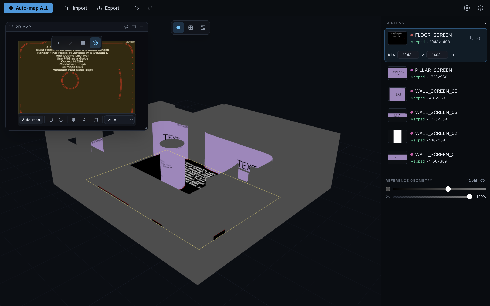
The small icons on the floating window let you swap which view is primary, dock it into a split, or leave it floating as a movable window.
3D view modes
Three ways to look at the mapped venue — press 1 / 2 / 3 over the 3D view, or click the toolbar.
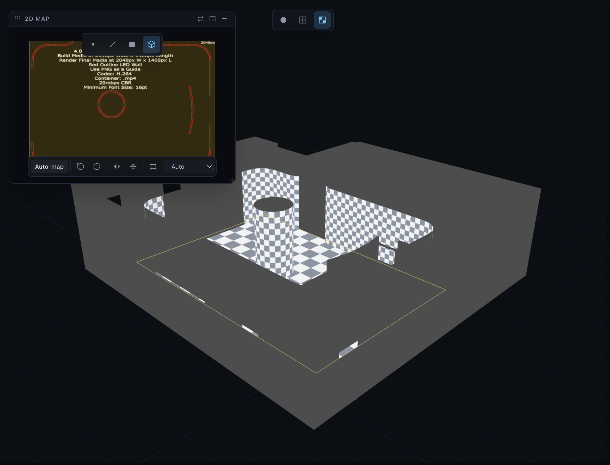
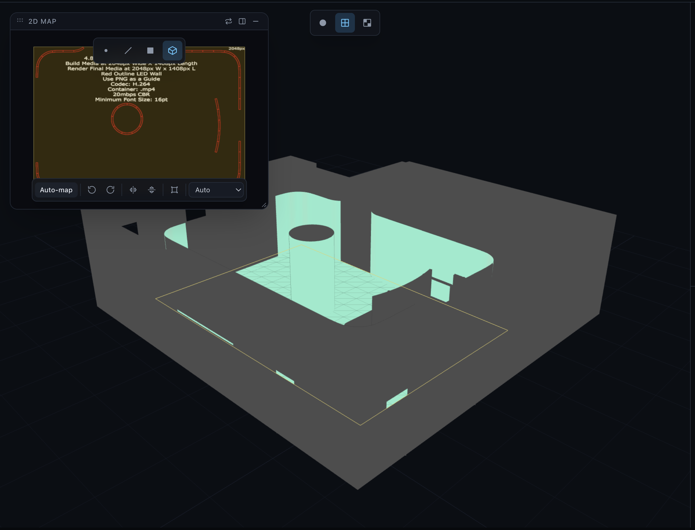
Shaded (the default, 1) shows the real linked content — see the workspace/venue screenshots above.
The Screens panel
Your screen list and control center, on the right.
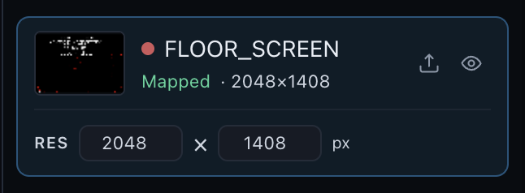
| Element | What it does |
|---|---|
| Thumbnail | Cropped to exactly the slice of artwork this screen samples — not the whole PSD. |
| Status | Mapped once fitted, otherwise Not mapped / No image. |
| RES | Detected render resolution — overtype with the screen's real LED pixel size if they differ. |
| Actions | Add/replace image, and a visibility control that cycles visible → solo → hidden. |
Reference geometry
Everything imported that isn't a screen — the room, trusses, décor — for spatial context.
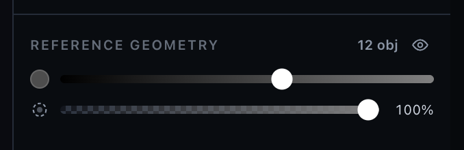
Mapping & the transform bar
Imported screens keep their own UVs by default — mapping is opt-in and one click.
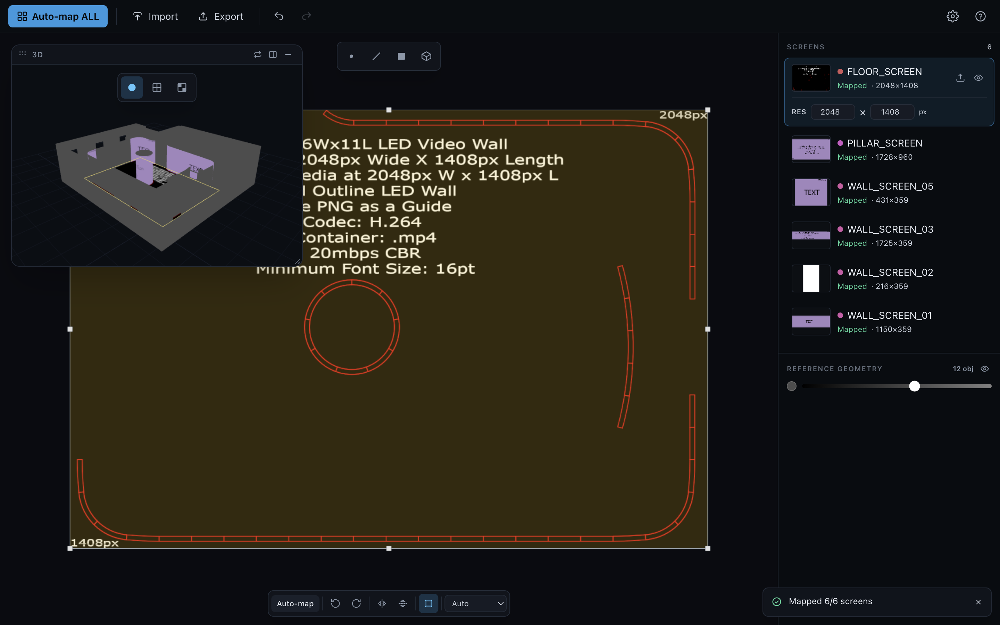
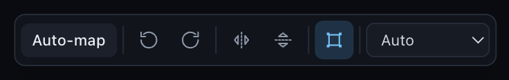
Projection — Auto keeps the imported UVs; Planar, Cylindrical, and Spherical re-project for curved or wrapped screens (cylinders get an automatic seam split). On a narrow view the bar scrolls sideways instead of overflowing.
Free transform
Grab handles to scale, rotate, and move a screen's artwork directly — press T with a screen selected.
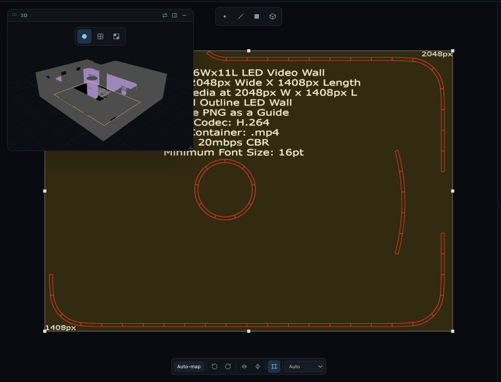
Send back / Export
The top-bar action button is source-aware — it changes label and behavior based on where the scene came from.
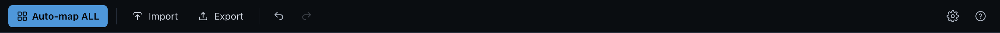
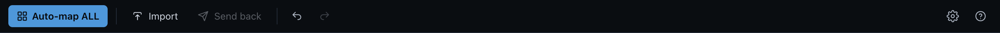
Notifications
UV Studio talks to you through toasts in the bottom-right.
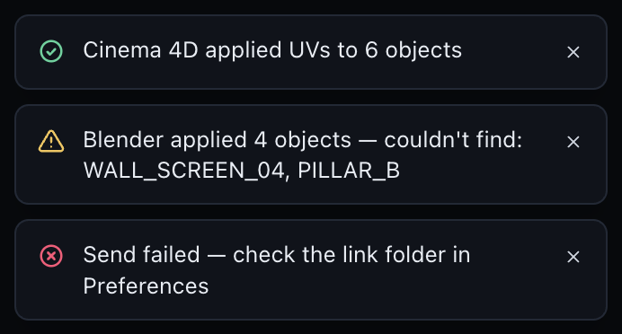
Cinema 4D bridge
Zero-config — both ends share a folder automatically.
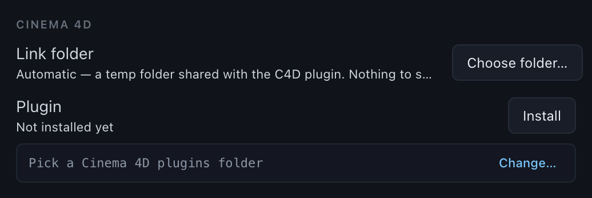
- Preferences ▸ Cinema 4D ▸ Install, then restart Cinema 4D.
- In C4D: Extensions ▸ UV Studio Bridge ▸ Send, with your objects selected.
- Map in UV Studio, then Send back — UVs land on the original UVW tags, losslessly.
Blender bridge
Same protocol, same zero-config folder.
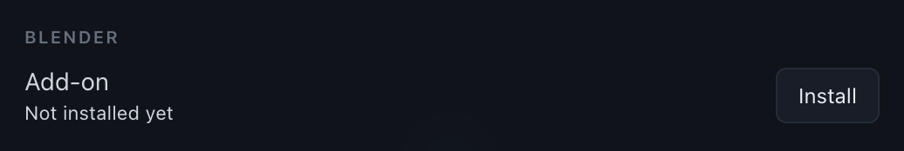
- Preferences ▸ Blender ▸ Install, then enable the add-on once in Blender ▸ Preferences ▸ Add-ons.
- In Blender: View3D ▸ Sidebar (N) ▸ UV Studio ▸ Send, with your meshes selected.
- Map, then Send back — UVs land on each object's active UV layer.
Keyboard shortcuts
| Key | Action |
|---|---|
| Tab | Swap the 2D / 3D views |
| 1 2 3 | Over 3D: Shaded / Distortion / Checker |
| B | Toggle backface culling (3D) |
| 1 2 3 4 | In 2D: Vertex / Edge / Face / Object edit mode |
| ` 0 | Leave edit mode |
| M | Auto-map the active screen |
| T | Free transform (⇧ non-uniform · ⌥ from corner) |
| R ⇧R | Rotate CW / CCW |
| F ⇧F | Flip horizontal / vertical |
| S | Interactive scale — move the mouse, click to set |
| + − | Scale up / down |
| X | Reset orientation |
| ⌘/Ctrl Z | Undo (⇧ to redo) |
| Right-drag | Pan the view · Esc clears selection |
| H | Toggle in-app Help |
FAQ
- A screen imported but shows "No image."
- It has no linked media yet. Select it and use Add image, drop a file on the 2D view, or re-open the link step.
- Auto-map said "0 mapped."
- There was nothing to fit — link artwork to the screens first, then Auto-map.
- My LED wall is a different pixel size than detected.
- Overtype the RES field on that screen with the true size; export/send carries it through.
- Does anything change my geometry?
- No. Round-trips send back UVs only — geometry and materials are never touched.
- The whole room came in, not just the screens.
- That's intended — unchecked objects arrive as dimmable reference geometry. Dim or hide them from the panel's Reference section.